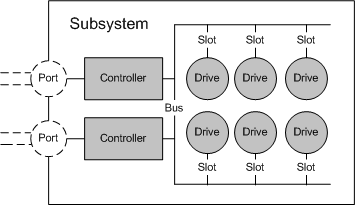

[Beginning with Windows 8 and Windows Server 2012, the Virtual Disk Service COM interface is superseded by the Windows Storage Management API.]
A subsystem object models a storage subsystem. A subsystem is either a RAID enclosure or a PCI RAID card. A single host computer can be connected to any number of subsystems. Each subsystem is managed by exactly one hardware provider. In a SAN configuration, the subsystem class represents a SAN storage enclosure.
A subsystem can contain any number of controllers and drives, and can surface (unmask) any number of LUNs to the computer on which the hardware provider is running. Higher-end subsystems can unmask LUNs to other computers on the network. Each disk drive within a subsystem is connected to a bus and occupies a slot in the bus. Each controller within a subsystem has one or more controller ports.
The illustration that follows shows the physical devices contained in a subsystem (LUNs are not shown) and the relationships among them.

VDS applications use the IVdsHwProvider::QuerySubSystems method to query the subsystems that belong to a specific hardware provider. Callers can get a pointer to a specific subsystem by selecting the desired subsystem object from the enumeration that is returned by the QuerySubSystems method. With a subsystem object, you can set the subsystem status, create LUNs, replace drives, and query for controllers, drives, and LUNs.
In addition to an object identifier, a name, and a serial number, subsystem object properties include the subsystem status, health, and flags; a count of the controllers, slots, and buses; and a rebuild priority setting.
The following table lists related interfaces, enumerations, and structures.
| Type | Element |
|---|---|
| Interfaces that are always exposed by this object | IVdsSubSystem. |
| Interfaces that are always exposed by this object in VDS 1.1 and 2.0 iSCSI providers only | IVdsSubSystemIscsi and IVdsSubSystemImportTarget. |
| Interfaces that may be exposed by this object | IVdsSubSystemNaming and IVdsMaintenance. |
| Associated enumerations | VDS_SUB_SYSTEM_FLAG and VDS_SUB_SYSTEM_STATUS. |
| Associated structures | VDS_SUB_SYSTEM_PROP and VDS_SUB_SYSTEM_NOTIFICATION. |
Â
IVdsHwProvider::QuerySubSystems
Â
Â